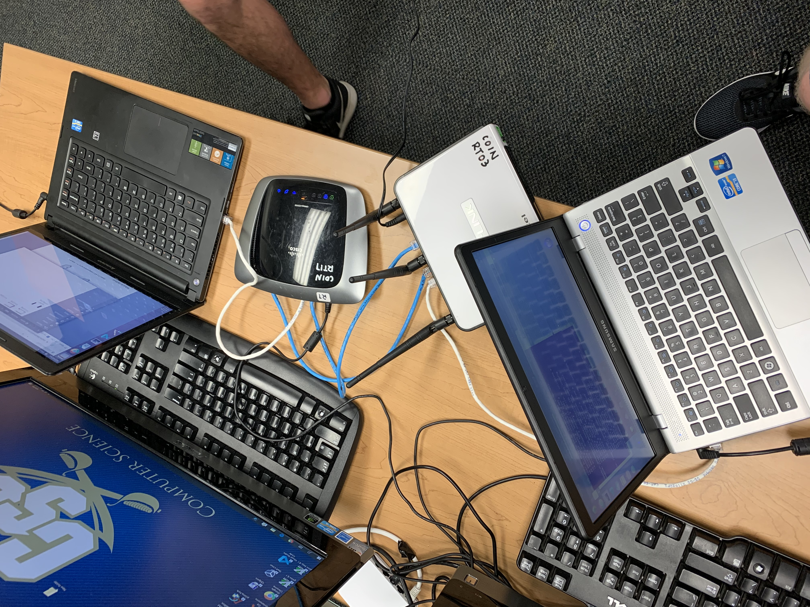
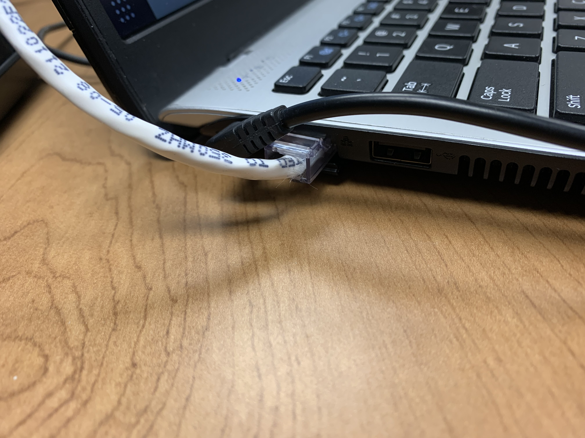
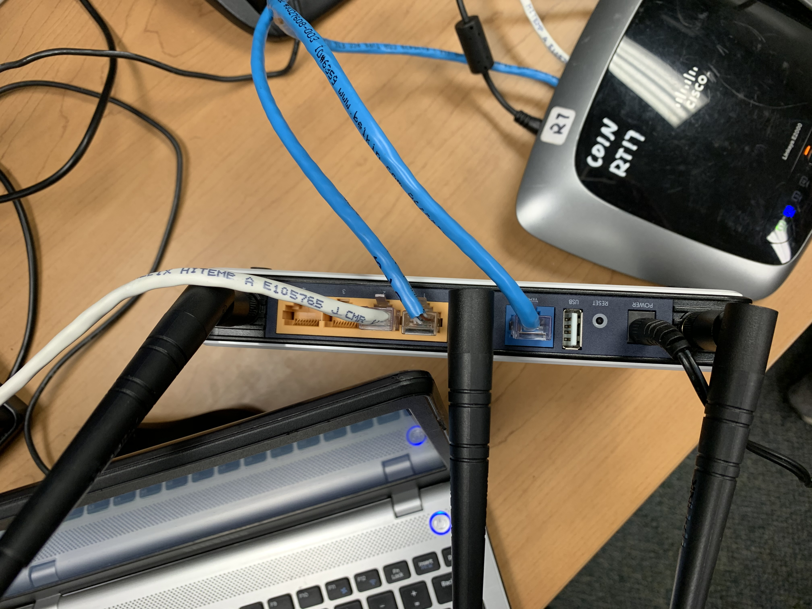
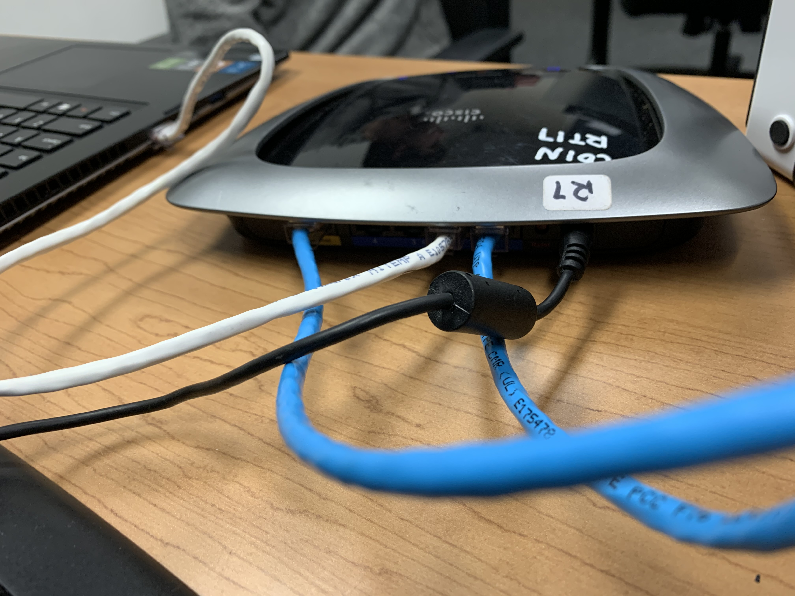
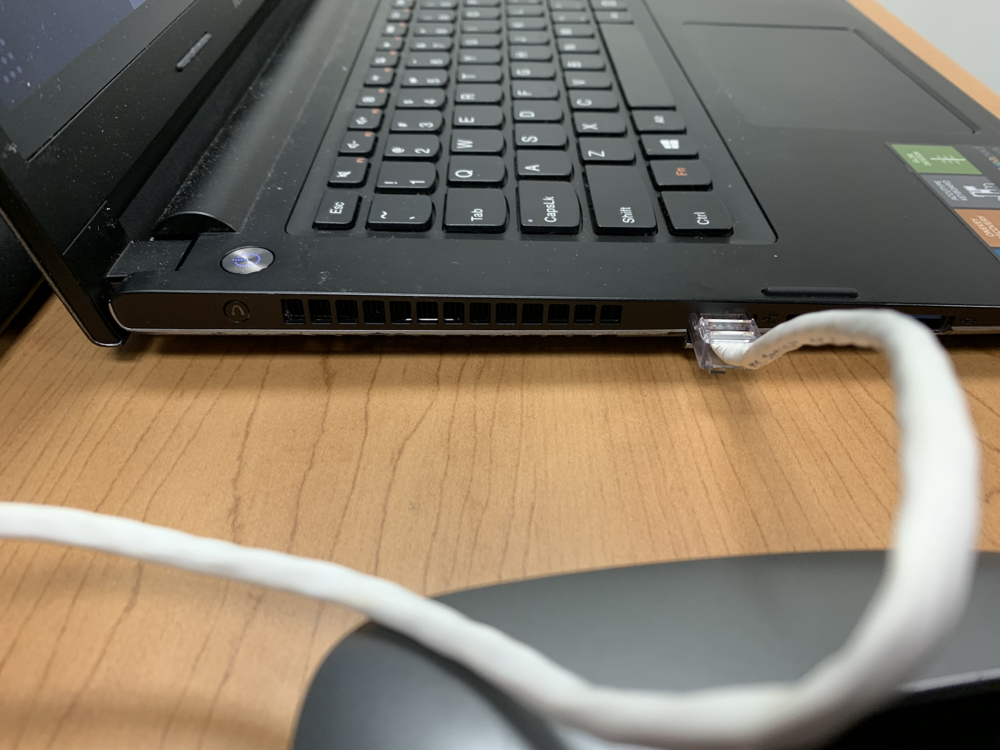

Section 4: Constructing a LAN Using Two Switches
TODO: #2, #3
-
- Plug both switches into the wall.
- Reset the new switch by pressing and holding the reset button
on the back for 10 seconds.
- Connect one switch and one of the computers using an
ethernet cable by plugging into the switch's ethernet port.
Connect the second switch to the second computer using the
same method. Connect the switches using two ethernet cables.
Each cable should connect from one switch's WAN to the other's
ethernet port.





- Find the IP of your second switch by clicking the top right option
bar -> Wired Connected -> Wired Settings -> the gear under
the Wired section. The IP is the Default Route. Copy the
IP.
- Paste the IP into the url to pull up the configuration
page.
- Traverse to the setup tab and the Network Setup section of
that tab. Under Router IP, change the Local IP Address to
the desired group IP.
- Click Apply Settings. Since your router's IP has been
changed, reset your computer to reset the router IP. Enter
the new IP into the url field and return to the setup
tab.
- Change the Start IP Address to the desired start IP. Change
Maximum DHCP Users to the desired number. Click Apply
Settings.
- To ensure setup has been done properly, open the terminal
and type
$ ifconfig
and ensure the IP in the
enp2s0 section is in the range you specified. If it is, you
are done!
- The network protocol we used is TCP.
-
| Time |
Reciever Screenshot |
Sender Screenshot |
| Start |
 |
 |
| 2.5 Minutes |
|
 |
| 5 Minutes |
|
 |
| End |
|
 |
{kind=link}
{kind=link}
{kind=link}
{kind=link}
{kind=link}